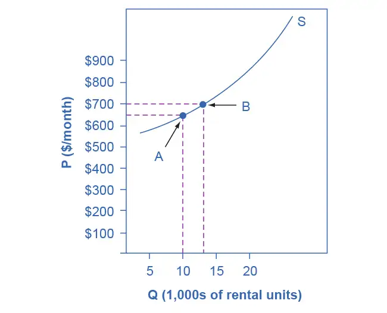
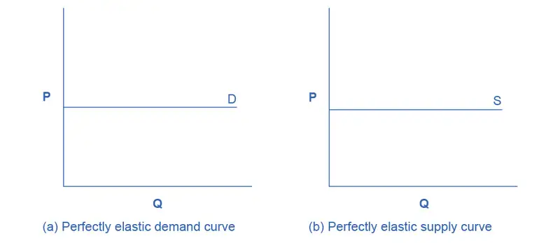
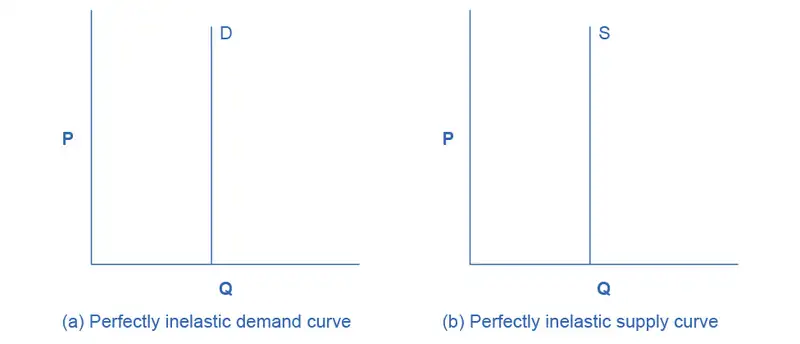
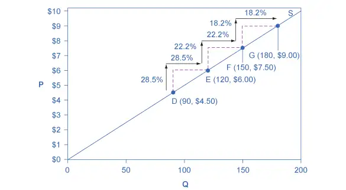
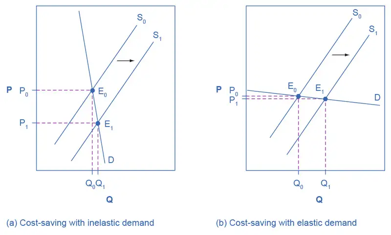
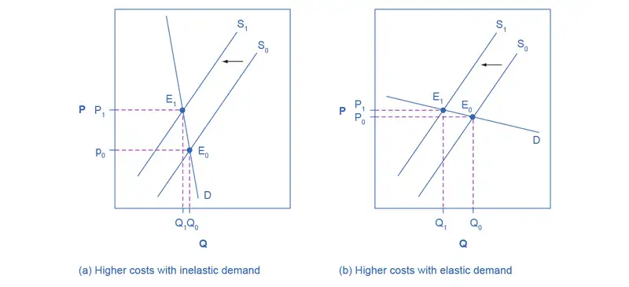
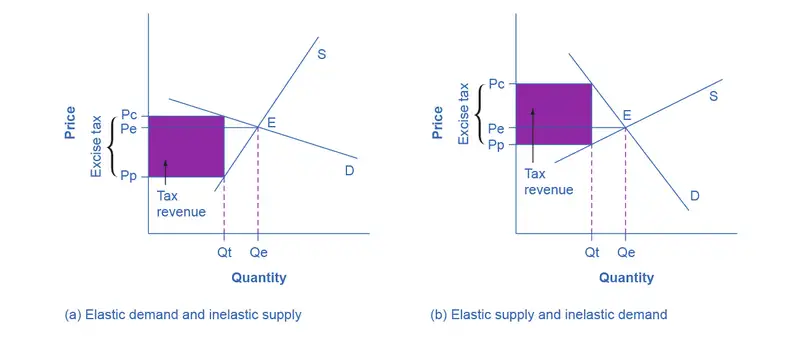
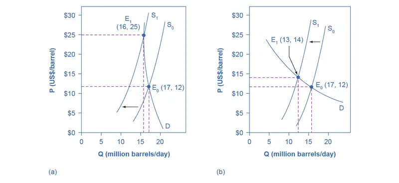

Chapter 5: Elasticity¶
Introduction¶
Bring It Home: That Will Be How Much?
Imagine going to your favorite coffee shop and having the waiter inform you the pricing has changed. Instead of $3 for a cup of coffee, you will now be charged $2 for coffee, $1 for creamer, and $1 for your choice of sweetener. If you pay your usual $3 for a cup of coffee, you must choose between creamer and sweetener. If you want both, you now face an extra charge of $1. Sound absurd? Well, that is similar to the situation Netflix customers found themselves in—they faced a 60% price hike to retain the same service in 2011.
In early 2011, Netflix consumers paid about $10 a month for a package consisting of streaming video and DVD rentals. In July 2011, the company announced a packaging change. Customers wishing to retain both streaming video and DVD rental would be charged $15.98 per month, a price increase of about 60%. In 2014, Netflix also raised its streaming video subscription price from $7.99 to $8.99 per month for new U.S. customers. The company also changed its policy of 4K streaming content from $9.00 to $12.00 per month that year.
How would customers of the 18-year-old firm react? Would they abandon Netflix? Would the ease of access to other venues make a difference in how consumers responded to the Netflix price change? At the time, Netflix had few competitors; in the intervening years, the field has grown to ten major competitors and nearly 200 smaller ones. Is that likely to have a greater impact than the price changes? We will explore the answers to those questions in this chapter, which focuses on the change in quantity with respect to a change in price, a concept economists call elasticity.
Chapter Outline: Introduction to Elasticity
In this chapter, you will learn about:
- Price Elasticity of Demand and Price Elasticity of Supply
- Polar Cases of Elasticity and Constant Elasticity
- Elasticity and Pricing
- Elasticity in Areas Other Than Price
Anyone who has studied economics knows the law of demand: a higher price will lead to a lower quantity demanded. What you may not know is how much lower the quantity demanded will be. Similarly, the law of supply states that a higher price will lead to a higher quantity supplied. The question is: How much higher? This chapter will explain how to answer these questions and why they are critically important in the real world.
To find answers to these questions, we need to understand the concept of elasticity. Elasticity is an economics concept that measures responsiveness of one variable to changes in another variable. Suppose you drop two items from a second-floor balcony. The first item is a tennis ball. The second item is a brick. Which will bounce higher? Obviously, the tennis ball. We would say that the tennis ball has greater elasticity.
Consider an economic example. Cigarette taxes are an example of a “sin tax,” a tax on something that is bad for you, like alcohol. Governments tax cigarettes at the state and national levels. As of 2021, state taxes ranged from a low of 17 cents per pack in Missouri to $4.35 per pack in Connecticut and New York. The average state cigarette tax is $1.76 per pack. The 2021 federal tax rate on cigarettes was $1.01 per pack. In 2015, the Obama Administration proposed raising the federal tax nearly a dollar to $1.95 per pack. The key question is: How much would cigarette purchases decline?
Taxes on cigarettes serve two purposes: to raise tax revenue for government and to discourage cigarette consumption. However, if a higher cigarette tax discourages consumption considerably, meaning a greatly reduced quantity of cigarette sales, then the cigarette tax on each pack will not raise much revenue for the government. Alternatively, a higher cigarette tax that does not discourage consumption by much will actually raise more tax revenue for the government. Thus, when a government agency tries to calculate the effects of altering its cigarette tax, it must analyze how much the tax affects the quantity of cigarettes consumed. This issue reaches beyond governments and taxes. Every firm faces a similar issue. When a firm considers raising the sales price, it must consider how much a price increase will reduce the quantity demanded of what it sells. Conversely, when a firm puts its products on sale, it must expect (or hope) that the lower price will lead to a significantly higher quantity demanded.
5.1 Price Elasticity of Demand and Price Elasticity of Supply¶
Learning Objectives
By the end of this section, you will be able to:
- Calculate the price elasticity of demand
- Calculate the price elasticity of supply
Both the demand and supply curve show the relationship between price and the number of units demanded or supplied. Price elasticity is the ratio between the percentage change in the quantity demanded (Qd) or supplied (Qs) and the corresponding percent change in price. The price elasticity of demand is the percentage change in the quantity demanded of a good or service divided by the percentage change in the price. The price elasticity of supply is the percentage change in quantity supplied divided by the percentage change in price.
We can usefully divide elasticities into three broad categories: elastic, inelastic, and unitary. Because price and quantity demanded move in opposite directions, price elasticity of demand is always a negative number. Therefore, price elasticity of demand is usually reported as its absolute value, without a negative sign. The summary in Table 5.1 is assuming absolute values for price elasticity of demand. An elastic demand or elastic supply is one in which the elasticity is greater than one, indicating a high responsiveness to changes in price. Elasticities that are less than one indicate low responsiveness to price changes and correspond to inelastic demand or inelastic supply. Unitary elasticities indicate proportional responsiveness of either demand or supply, as Table 5.1 summarizes.
Table 5.1 Elastic, Inelastic, and Unitary: Three Cases of Elasticity
| If . . . | Then . . . | And It Is Called . . . |
|---|---|---|
| \(\text{\% change in quantity} \gt \text{\% change in price}\) | \(\frac{\text{\% change in quantity}}{\text{\% change in price}} \gt 1\) | Elastic |
| \(\text{\% change in quantity}=\text{\% change in price}\) | \(\frac{\text{\% change in quantity}}{\text{\% change in price}}=1\) | Unitary |
| \(\text{\% change in quantity} \lt \text{\% change in price}\) | \(\frac{\text{\% change in quantity}}{\text{\% change in price}} \lt 1\) | Inelastic |
Link It Up
Before we delve into the details of elasticity, enjoy this article on elasticity and ticket prices at the Super Bowl.
To calculate elasticity along a demand or supply curve economists use the average percent change in both quantity and price. This is called the Midpoint Method for Elasticity, and is represented in the following equations:
The advantage of the Midpoint Method is that one obtains the same elasticity between two price points whether there is a price increase or decrease. This is because the formula uses the same base (average quantity and average price) for both cases.
Calculating Price Elasticity of Demand¶
Let’s calculate the elasticity between points A and B and between points G and H as Figure 5.2 shows.
![This graph illustrates a downward-sloping demand curve. Different price and quantity demanded combinations are shown, with different letters representing those points. The top left combination is point H, a price of 130 dollars and quantity of 1600. The next point is point G, a price of 120 dollars and quantity of 1800. Moving down the demand curve the last two points illustrated are B and A. B is price of 70 dollars and quantity of 2800. A is a price of 60 dollars and quantity of 3000. These points and their different prices and quantities can be used to calculate price elasticity of demand.](img/cnx-econ3e-c05-003.webp)
First, apply the formula to calculate the elasticity as price decreases from $70 at point B to $60 at point A:
Therefore, the elasticity of demand between these two points is \(\frac{6.9\%}{-15.4\%}\) which is 0.45, an amount smaller than one, showing that the demand is inelastic in this interval. Price elasticities of demand are always negative since price and quantity demanded always move in opposite directions (on the demand curve). By convention, we always talk about price elasticities of demand as positive numbers. Mathematically, we take the absolute value of the result. We will ignore this detail from now on, while remembering to interpret elasticities as positive numbers.
This means that, along the demand curve between point B and A, if the price changes by 1%, the quantity demanded will change by 0.45%. A change in the price will result in a smaller percentage change in the quantity demanded. For example, a 10% increase in the price will result in only a 4.5% decrease in quantity demanded. A 10% decrease in the price will result in only a 4.5% increase in the quantity demanded. Price elasticities of demand are negative numbers indicating that the demand curve is downward sloping, but we read them as absolute values. The following Work It Out feature will walk you through calculating the price elasticity of demand.
Work It Out: Finding the Price Elasticity of Demand
Calculate the price elasticity of demand using the data in Figure 5.2 for an increase in price from G to H. Has the elasticity increased or decreased?
Step 1. We know that:
Step 2. From the Midpoint Formula we know that:
Step 3. So we can use the values provided in the figure in each equation:
Step 4. Then, we can use those values to determine the price elasticity of demand:
Therefore, the elasticity of demand from G to H is 1.47. The magnitude of the elasticity has increased (in absolute value) as we moved up along the demand curve from points A to B. Recall that the elasticity between these two points was 0.45. Demand was inelastic between points A and B and elastic between points G and H. This shows us that price elasticity of demand changes at different points along a straight-line demand curve.
Calculating the Price Elasticity of Supply¶
Assume that an apartment rents for $650 per month and at that price the landlord rents 10,000 units as Figure 5.3 shows. When the price increases to $700 per month, the landlord supplies 13,000 units into the market. By what percentage does apartment supply increase? What is the price sensitivity?

Using the Midpoint Method,
Again, as with the elasticity of demand, the elasticity of supply is not followed by any units. Elasticity is a ratio of one percentage change to another percentage change—nothing more—and we read it as an absolute value. In this case, a 1% rise in price causes an increase in quantity supplied of 3.5%. The greater than one elasticity of supply means that the percentage change in quantity supplied will be greater than a one percent price change. If you're starting to wonder if the concept of slope fits into this calculation, read the following Clear It Up box.
Clear It Up: Is the elasticity the slope?
It is a common mistake to confuse the slope of either the supply or demand curve with its elasticity. The slope is the rate of change in units along the curve, or the rise/run (change in y over the change in x). For example, in Figure 5.2, at each point shown on the demand curve, price drops by $10 and the number of units demanded increases by 200 compared to the point to its left. The slope is –10/200 along the entire demand curve and does not change. The price elasticity, however, changes along the curve. Elasticity between points A and B was 0.45 and increased to 1.47 between points G and H. Elasticity is the percentage change, which is a different calculation from the slope and has a different meaning.
When we are at the upper end of a demand curve, where price is high and the quantity demanded is low, a small change in the quantity demanded, even in, say, one unit, is pretty big in percentage terms. A change in price of, say, a dollar, is going to be much less important in percentage terms than it would have been at the bottom of the demand curve. Likewise, at the bottom of the demand curve, that one unit change when the quantity demanded is high will be small as a percentage.
Thus, at one end of the demand curve, where we have a large percentage change in quantity demanded over a small percentage change in price, the elasticity value would be high, or demand would be relatively elastic. Even with the same change in the price and the same change in the quantity demanded, at the other end of the demand curve the quantity is much higher, and the price is much lower, so the percentage change in quantity demanded is smaller and the percentage change in price is much higher. That means at the bottom of the curve we'd have a small numerator over a large denominator, so the elasticity measure would be much lower, or inelastic.
As we move along the demand curve, the values for quantity and price go up or down, depending on which way we are moving, so the percentages for, say, a $1 difference in price or a one unit difference in quantity, will change as well, which means the ratios of those percentages and hence the elasticity will change.
5.2 Polar Cases of Elasticity and Constant Elasticity¶
Learning Objectives
By the end of this section, you will be able to:
- Differentiate between infinite and zero elasticity
- Analyze graphs in order to classify elasticity as constant unitary, infinite, or zero
There are two extreme cases of elasticity: when elasticity equals zero and when it is infinite. A third case of interest is that of constant unitary elasticity. We will describe each case. Infinite elasticity or perfect elasticity refers to the extreme case where either the quantity demanded (Qd) or supplied (Qs) changes by an infinite amount in response to any change in price at all. In both cases, the supply and the demand curve are horizontal as Figure 5.4 shows. While perfectly elastic supply curves are for the most part unrealistic, goods with readily available inputs and whose production can easily expand will feature highly elastic supply curves. Examples include pizza, bread, books, and pencils. Similarly, perfectly elastic demand is an extreme example. However, luxury goods, items that take a large share of individuals’ income, and goods with many substitutes are likely to have highly elastic demand curves. Examples of such goods are Caribbean cruises and sports vehicles.

Zero elasticity or perfect inelasticity, as Figure 5.5 depicts, refers to the extreme case in which a percentage change in price, no matter how large, results in zero change in quantity. While a perfectly inelastic supply is an extreme example, goods with limited supply of inputs are likely to feature highly inelastic supply curves. Examples include diamond rings or housing in prime locations such as apartments facing Central Park in New York City. Similarly, while perfectly inelastic demand is an extreme case, necessities with no close substitutes are likely to have highly inelastic demand curves. This is the case of life-saving drugs and gasoline.

Constant unitary elasticity, in either a supply or demand curve, occurs when a price change of one percent results in a quantity change of one percent. Figure 5.6 shows a demand curve with constant unit elasticity. Using the midpoint method, you can calculate that between points A and B on the demand curve, the price changes by 66.7% and quantity demanded also changes by 66.7%. Hence, the elasticity equals 1. Between points B and C, price again changes by 66.7% as does quantity, while between points C and D the corresponding percentage changes are again 66.7% for both price and quantity. In each case, then, the percentage change in price equals the percentage change in quantity, and consequently elasticity equals 1. Notice that in absolute value, the declines in price, as you step down the demand curve, are not identical. Instead, the price falls by $8.00 from A to B, by a smaller amount of $4.00 from B to C, and by a still smaller amount of $2.00 from C to D. As a result, a demand curve with constant unitary elasticity moves from a steeper slope on the left and a flatter slope on the right—and a curved shape overall.
![A demand curve that illustrates unitary elasticity along its entire length is shown. Because of unitary elasticity, it will always have a curved shape. This curved shape represents that the percentage change in quantity demanded divided by the percentage change in price will always equal one. Four points with four different combinations of price and quantity are shown, and the percentage changes in price and quantity between the points are illustrated. At all the points, these percentage changes are 66.7 percent.](img/cnx-econ-c05-016.webp)
Unlike the demand curve with unitary elasticity, the supply curve with unitary elasticity is represented by a straight line, and that line goes through the origin. In each pair of points on the supply curve there is an equal difference in quantity of 30. However, in percentage value, using the midpoint method, the steps are decreasing as one moves from left to right, from 28.6% to 22.2% to 18.2%, because the quantity points in each percentage calculation are getting increasingly larger, which expands the denominator in the elasticity calculation of the percentage change in quantity.
Consider the price changes moving up the supply curve in Figure 5.7. From points D to E to F and to G on the supply curve, each step of $1.50 is the same in absolute value. However, if we measure the price changes in percentage change terms, using the midpoint method, they are also decreasing, from 28.6% to 22.2% to 18.2%, because the original price points in each percentage calculation are getting increasingly larger in value, increasing the denominator in the calculation of the percentage change in price. Along the constant unitary elasticity supply curve, the percentage quantity increases on the horizontal axis exactly match the percentage price increases on the vertical axis—so this supply curve has a constant unitary elasticity at all points.

5.3 Elasticity and Pricing¶
Learning Objectives
By the end of this section, you will be able to:
- Analyze how price elasticities impact revenue
- Evaluate how elasticity can cause shifts in demand and supply
- Predict how the long-run and short-run impacts of elasticity affect equilibrium
- Explain how the elasticity of demand and supply determine the incidence of a tax on buyers and sellers
Studying elasticities is useful for a number of reasons, pricing being most important. Let’s explore how elasticity relates to revenue and pricing, both in the long and short run. First, let’s look at the elasticities of some common goods and services.
Table 5.2 shows a selection of demand elasticities for different goods and services drawn from a variety of different studies by economists, listed in order of increasing elasticity.
Table 5.2 Some Selected Elasticities of Demand
| Goods and Services | Elasticity of Price |
|---|---|
| Housing | 0.12 |
| Transatlantic air travel (economy class) | 0.12 |
| Rail transit (rush hour) | 0.15 |
| Electricity | 0.20 |
| Taxi cabs | 0.22 |
| Gasoline | 0.35 |
| Transatlantic air travel (first class) | 0.40 |
| Wine | 0.55 |
| Beef | 0.59 |
| Transatlantic air travel (business class) | 0.62 |
| Kitchen and household appliances | 0.63 |
| Cable TV (basic rural) | 0.69 |
| Chicken | 0.64 |
| Soft drinks | 0.70 |
| Beer | 0.80 |
| New vehicle | 0.87 |
| Rail transit (off-peak) | 1.00 |
| Computer | 1.44 |
| Cable TV (basic urban) | 1.51 |
| Cable TV (premium) | 1.77 |
| Restaurant meals | 2.27 |
Note that demand for necessities such as housing and electricity is inelastic, while items that are not necessities such as restaurant meals are more price-sensitive. If the price of a restaurant meal increases by 10%, the quantity demanded will decrease by 22.7%. A 10% increase in the price of housing will cause only a slight decrease of 1.2% in the quantity of housing demanded.
Link It Up
Read this article for an example of price elasticity that may have affected you.
Does Raising Price Bring in More Revenue?¶
Imagine that a band on tour is playing in an indoor arena with 15,000 seats. To keep this example simple, assume that the band keeps all the money from ticket sales. Assume further that the band pays the costs for its appearance, but that these costs, like travel, and setting up the stage, are the same regardless of how many people are in the audience. Finally, assume that all the tickets have the same price. (The same insights apply if ticket prices are more expensive for some seats than for others, but the calculations become more complicated.) The band knows that it faces a downward-sloping demand curve; that is, if the band raises the ticket price, it will sell fewer seats. How should the band set the ticket price to generate the most total revenue, which in this example, because costs are fixed, will also mean the highest profits for the band? Should the band sell more tickets at a lower price or fewer tickets at a higher price?
The key concept in thinking about collecting the most revenue is the price elasticity of demand. Total revenue is price times the quantity of tickets sold. Imagine that the band starts off thinking about a certain price, which will result in the sale of a certain quantity of tickets. The three possibilities are in Table 5.3. If demand is elastic at that price level, then the band should cut the price, because the percentage drop in price will result in an even larger percentage increase in the quantity sold—thus raising total revenue. However, if demand is inelastic at that original quantity level, then the band should raise the ticket price, because a certain percentage increase in price will result in a smaller percentage decrease in the quantity sold—and total revenue will rise. If demand has a unitary elasticity at that quantity, then an equal percentage change in quantity will offset a moderate percentage change in the price—so the band will earn the same revenue whether it (moderately) increases or decreases the ticket price.
Table 5.3 Will the Band Earn More Revenue by Changing Ticket Prices?
| If Demand Is . . . | Then . . . | Therefore . . . |
|---|---|---|
| Elastic | \(\%\text{change in Qd} \gt \%\text{change in P}\) | A given % rise in P will be more than offset by a larger % fall in Q so that total revenue (P × Q) falls. |
| Unitary | \(\%\text{change in Qd}=\%\text{change in P}\) | A given % rise in P will be exactly offset by an equal % fall in Q so that total revenue (P × Q) is unchanged. |
| Inelastic | \(\%\text{change in Qd} \lt \%\text{change in P}\) | A given % rise in P will cause a smaller % fall in Q so that total revenue (P × Q) rises. |
What if the band keeps cutting price, because demand is elastic, until it reaches a level where it sells all 15,000 seats in the available arena? If demand remains elastic at that quantity, the band might try to move to a bigger arena, so that it could slash ticket prices further and see a larger percentage increase in the quantity of tickets sold. However, if the 15,000-seat arena is all that is available or if a larger arena would add substantially to costs, then this option may not work.
Conversely, a few bands are so famous, or have such fanatical followings, that demand for tickets may be inelastic right up to the point where the arena is full. These bands can, if they wish, keep raising the ticket price. Ironically, some of the most popular bands could make more revenue by setting prices so high that the arena is not full—but those who buy the tickets would have to pay very high prices. However, bands sometimes choose to sell tickets for less than the absolute maximum they might be able to charge, often in the hope that fans will feel happier and spend more on recordings, T-shirts, and other paraphernalia.
Can Businesses Pass Costs on to Consumers?¶
Most businesses face a day-to-day struggle to figure out ways to produce at a lower cost, as one pathway to their goal of earning higher profits. However, in some cases, the price of a key input over which the firm has no control may rise. For example, many chemical companies use petroleum as a key input, but they have no control over the world market price for crude oil. Coffee shops use coffee as a key input, but they have no control over the world market price of coffee. If the cost of a key input rises, can the firm pass those higher costs along to consumers in the form of higher prices? Conversely, if new and less expensive ways of producing are invented, can the firm keep the benefits in the form of higher profits, or will the market pressure them to pass the gains along to consumers in the form of lower prices? The price elasticity of demand plays a key role in answering these questions.
Imagine that as a consumer of legal pharmaceutical products, you read a newspaper story that a technological breakthrough in the production of aspirin has occurred, so that every aspirin factory can now produce aspirin more cheaply. What does this discovery mean to you? Figure 5.8 illustrates two possibilities. In Figure 5.8 (a), the demand curve is highly inelastic. In this case, a technological breakthrough that shifts supply to the right, from S0 to S1, so that the equilibrium shifts from E0 to E1, creates a substantially lower price for the product with relatively little impact on the quantity sold. In Figure 5.8 (b), the demand curve is highly elastic. In this case, the technological breakthrough leads to a much greater quantity sold in the market at very close to the original price. Consumers benefit more, in general, when the demand curve is more inelastic because the shift in the supply results in a much lower price for consumers.

Aspirin producers may find themselves in a nasty bind here. The situation in Figure 5.8, with extremely inelastic demand, means that a new invention may cause the price to drop dramatically while quantity changes little. As a result, the new production technology can lead to a drop in the revenue that firms earn from aspirin sales. However, if strong competition exists between aspirin producers, each producer may have little choice but to search for and implement any breakthrough that allows it to reduce production costs. After all, if one firm decides not to implement such a cost-saving technology, other firms that do can drive them out of business.
Since demand for food is generally inelastic, farmers may often face the situation in Figure 5.8 (a). That is, a surge in production leads to a severe drop in price that can actually decrease the total revenue that farmers receive. Conversely, poor weather or other conditions that cause a terrible year for farm production can sharply raise prices so that the total revenue that the farmer receives increases. The Clear It Up box discusses how these issues relate to coffee.
Clear It Up: How do coffee prices fluctuate?
Coffee is an international crop. The top five coffee-exporting nations are Brazil, Vietnam, Colombia, Indonesia, and Ethiopia. In these nations and others, 20 million families depend on selling coffee beans as their main source of income. These families are exposed to enormous risk, because the world price of coffee bounces up and down. For example, in 1993, the world price of coffee was about 50 cents per pound. In 1995 it was four times as high, at $2 per pound. By 1997 it had fallen by half to $1.00 per pound. In 1998 it leaped back up to $2 per pound. By 2001 it had fallen back to 46 cents a pound. By early 2011 it rose to about $2.31 per pound. By the end of 2012, the price had fallen back to about $1.31 per pound. Since then, the price of coffee has continued to fluctuate.
The reason for these price fluctuations lies in a combination of inelastic demand and shifts in supply. The elasticity of coffee demand is only about 0.3; that is, a 10% rise in the price of coffee leads to a decline of about 3% in the quantity of coffee consumed. When a major frost hit the Brazilian coffee crop in 1994, coffee supply shifted to the left with an inelastic demand curve, leading to much higher prices. Conversely, when Vietnam entered the world coffee market as a major producer in the late 1990s, the supply curve shifted out to the right. With a highly inelastic demand curve, coffee prices fell dramatically. Figure 5.8 (a) illustrates this situation.
Elasticity also reveals whether firms can pass higher costs that they incur on to consumers. Addictive substances, for which demand is inelastic, are products for which producers can pass higher costs on to consumers. For example, the demand for cigarettes is relatively inelastic among regular smokers who are somewhat addicted. Economic research suggests that increasing cigarette prices by 10% leads to about a 3% reduction in the quantity of cigarettes that adults smoke, so the elasticity of demand for cigarettes is 0.3. If society increases taxes on companies that produce cigarettes, the result will be, as in Figure 5.9 (a), that the supply curve shifts from S0 to S1. However, as the equilibrium moves from E0 to E1, governments mainly pass along these taxes to consumers in the form of higher prices. These higher taxes on cigarettes will raise tax revenue for the government, but they will not much affect the quantity of smoking.
If the goal is to reduce the quantity of cigarettes demanded, we must achieve it by shifting this inelastic demand back to the left, perhaps with public programs to discourage cigarette use or to help people to quit. For example, anti-smoking advertising campaigns have shown some ability to reduce smoking. However, if cigarette demand were more elastic, as in Figure 5.9 (b), then an increase in taxes that shifts supply from S0 to S1 and equilibrium from E0 to E1 would reduce the quantity of cigarettes smoked substantially. Youth smoking seems to be more elastic than adult smoking—that is, the quantity of youth smoking will fall by a greater percentage than the quantity of adult smoking in response to a given percentage increase in price.

Elasticity and Tax Incidence¶
The example of cigarette taxes demonstrated that because demand is inelastic, taxes are not effective at reducing the equilibrium quantity of smoking, and they are mainly passed along to consumers in the form of higher prices. The analysis, or manner, of how a tax burden is divided between consumers and producers is called tax incidence. Typically, the tax incidence, or burden, falls both on the consumers and producers of the taxed good. However, if one wants to predict which group will bear most of the burden, all one needs to do is examine the elasticity of demand and supply. In the tobacco example, the tax burden falls on the most inelastic side of the market.
If demand is more inelastic than supply, consumers bear most of the tax burden, and if supply is more inelastic than demand, sellers bear most of the tax burden.
The intuition for this is simple. When the demand is inelastic, consumers are not very responsive to price changes, and the quantity demanded reduces only modestly when the tax is introduced. In the case of smoking, the demand is inelastic because consumers are addicted to the product. The government can then pass the tax burden along to consumers in the form of higher prices, without much of a decline in the equilibrium quantity.
Similarly, when a government introduces a tax in a market with an inelastic supply, such as, for example, beachfront hotels, and sellers have no alternative than to accept lower prices for their business, taxes do not greatly affect the equilibrium quantity. The tax burden now passes on to the sellers. If the supply was elastic and sellers had the possibility of reorganizing their businesses to avoid supplying the taxed good, the tax burden on the sellers would be much smaller. The tax would result in a much lower quantity sold instead of lower prices received. Figure 5.10 illustrates this relationship between the tax incidence and elasticity of demand and supply.

In Figure 5.10 (a), the supply is inelastic and the demand is elastic, such as in the example of beachfront hotels. While consumers may have other vacation choices, sellers can’t easily move their businesses. By introducing a tax, the government essentially creates a wedge between the price paid by consumers Pc and the price received by producers Pp. In other words, of the total price paid by consumers, part is retained by the sellers and part is paid to the government in the form of a tax. The distance between Pc and Pp is the tax rate. The new market price is Pc, but sellers receive only Pp per unit sold, as they pay Pc-Pp to the government. Since we can view a tax as raising the costs of production, this could also be represented by a leftward shift of the supply curve, where the new supply curve would intercept the demand at the new quantity Qt. For simplicity, Figure 5.10 omits the shift in the supply curve.
The tax revenue is given by the shaded area, which we obtain by multiplying the tax per unit by the total quantity sold Qt. The tax incidence on the consumers is given by the difference between the price paid Pc and the initial equilibrium price Pe. The tax incidence on the sellers is given by the difference between the initial equilibrium price Pe and the price they receive after the tax is introduced Pp. In Figure 5.10 (a), the tax burden falls disproportionately on the sellers, and a larger proportion of the tax revenue (the shaded area) is due to the resulting lower price received by the sellers than by the resulting higher prices paid by the buyers. Figure 5.10 (b) describes the example of the tobacco excise tax where the supply is more elastic than demand. The tax incidence now falls disproportionately on consumers, as shown by the large difference between the price they pay, Pc, and the initial equilibrium price, Pe. Sellers receive a lower price than before the tax, but this difference is much smaller than the change in consumers’ price. From this analysis one can also predict whether a tax is likely to create a large revenue or not. The more elastic the demand curve, the more likely that consumers will reduce quantity instead of paying higher prices. The more elastic the supply curve, the more likely that sellers will reduce the quantity sold, instead of taking lower prices. In a market where both the demand and supply are very elastic, the imposition of an excise tax generates low revenue.
Some believe that excise taxes hurt mainly the specific industries they target. For example, the medical device excise tax, which was implemented in 2013, has been controversial for it can delay industry profitability and therefore hamper start-ups and medical innovation. The tax was repealed in late 2019. However, whether the tax burden falls mostly on the medical device industry or on the patients depends simply on the elasticity of demand and supply.
Long-Run vs. Short-Run Impact¶
Elasticities are often lower in the short run than in the long run. On the demand side of the market, it can sometimes be difficult to change Qd in the short run, but easier in the long run. Consumption of energy is a clear example. In the short run, it is not easy for a person to make substantial changes in energy consumption. Maybe you can carpool to work sometimes or adjust your home thermostat by a few degrees if the cost of energy rises, but that is about all. However, in the long run you can purchase a car that gets more miles to the gallon, choose a job that is closer to where you live, buy more energy-efficient home appliances, or install more insulation in your home. As a result, the elasticity of demand for energy is somewhat inelastic in the short run, but much more elastic in the long run.
Figure 5.11 is an example, based roughly on historical experience, for the responsiveness of Qd to price changes. In 1973, the price of crude oil was $12 per barrel and total consumption in the U.S. economy was 17 million barrels per day. That year, the nations who were members of the Organization of Petroleum Exporting Countries (OPEC) cut off oil exports to the United States for six months because the Arab members of OPEC disagreed with the U.S. support for Israel. OPEC did not bring exports back to their earlier levels until 1975—a policy that we can interpret as a shift of the supply curve to the left in the U.S. petroleum market. Figure 5.11 (a) and Figure 5.11 (b) show the same original equilibrium point and the same identical shift of a supply curve to the left from S0 to S1.

Figure 5.11 (a) shows inelastic demand for oil in the short run similar to that which existed for the United States in 1973. In Figure 5.11 (a), the new equilibrium (E1) occurs at a price of $25 per barrel, roughly double the price before the OPEC shock, and an equilibrium quantity of 16 million barrels per day. Figure 5.11 (b) shows what the outcome would have been if the U.S. demand for oil had been more elastic, a result more likely over the long term. This alternative equilibrium (E1) would have resulted in a smaller price increase to $14 per barrel and larger reduction in equilibrium quantity to 13 million barrels per day. In 1983, for example, U.S. petroleum consumption was 15.3 million barrels a day, which was lower than in 1973 or 1975. U.S. petroleum consumption was down even though the U.S. economy was about one-fourth larger in 1983 than it had been in 1973. The primary reason for the lower quantity was that higher energy prices spurred conservation efforts, and after a decade of home insulation, more fuel-efficient cars, more efficient appliances and machinery, and other fuel-conserving choices, the demand curve for energy had become more elastic.
On the supply side of markets, producers of goods and services typically find it easier to expand production in the long term of several years rather than in the short run of a few months. After all, in the short run it can be costly or difficult to build a new factory, hire many new workers, or open new stores. However, over a few years, all of these are possible.
In most markets for goods and services, prices bounce up and down more than quantities in the short run, but quantities often move more than prices in the long run. The underlying reason for this pattern is that supply and demand are often inelastic in the short run, so that shifts in either demand or supply can cause a relatively greater change in prices. However, since supply and demand are more elastic in the long run, the long-run movements in prices are more muted, while quantity adjusts more easily in the long run.
5.4 Elasticity in Areas Other Than Price¶
Learning Objectives
By the end of this section, you will be able to:
- Calculate the income elasticity of demand and the cross-price elasticity of demand
- Calculate the elasticity in labor and financial capital markets through an understanding of the elasticity of labor supply and the elasticity of savings
- Apply concepts of price elasticity to real-world situations
The basic idea of elasticity—how a percentage change in one variable causes a percentage change in another variable—does not just apply to the responsiveness of quantity supplied and quantity demanded to changes in the price of a product. Recall that quantity demanded (Qd) depends on income, tastes and preferences, the prices of related goods, and so on, as well as price. Similarly, quantity supplied (Qs) depends on factors such as the cost of production, as well as price. We can measure elasticity for any determinant of quantity supplied and quantity demanded, not just the price.
Income Elasticity of Demand¶
The income elasticity of demand is the percentage change in quantity demanded divided by the percentage change in income.
For most products, most of the time, the income elasticity of demand is positive: that is, a rise in income will cause an increase in the quantity demanded. This pattern is common enough that we refer to these goods as normal goods. However, for a few goods, an increase in income means that one might purchase less of the good. For example, those with a higher income might buy fewer hamburgers, because they are buying more steak instead, or those with a higher income might buy less cheap wine and more imported beer. When the income elasticity of demand is negative, we call the good an inferior good.
We introduced the concepts of normal and inferior goods in Demand and Supply. A higher level of income causes a demand curve to shift to the right for a normal good, which means that the income elasticity of demand is positive. How far the demand shifts depends on the income elasticity of demand. A higher income elasticity means a larger shift. However, for an inferior good, that is, when the income elasticity of demand is negative, a higher level of income would cause the demand curve for that good to shift to the left. Again, how much it shifts depends on how large the (negative) income elasticity is.
Cross-Price Elasticity of Demand¶
A change in the price of one good can shift the quantity demanded for another good. If the two goods are complements, like bread and peanut butter, then a drop in the price of one good will lead to an increase in the quantity demanded of the other good. However, if the two goods are substitutes, like plane tickets and train tickets, then a drop in the price of one good will cause people to substitute toward that good, and to reduce consumption of the other good. Cheaper plane tickets lead to fewer train tickets, and vice versa.
The cross-price elasticity of demand puts some meat on the bones of these ideas. The term “cross-price” refers to the idea that the price of one good is affecting the quantity demanded of a different good. Specifically, the cross-price elasticity of demand is the percentage change in the quantity of good A that is demanded as a result of a percentage change in the price of good B.
Substitute goods have positive cross-price elasticities of demand: if good A is a substitute for good B, like coffee and tea, then a higher price for B will mean a greater quantity consumed of A. Complement goods have negative cross-price elasticities: if good A is a complement for good B, like coffee and sugar, then a higher price for B will mean a lower quantity consumed of A.
Elasticity in Labor and Financial Capital Markets¶
The concept of elasticity applies to any market, not just markets for goods and services. In the labor market, for example, the wage elasticity of labor supply—that is, the percentage change in hours worked divided by the percentage change in wages—will reflect the shape of the labor supply curve. Specifically:
The wage elasticity of labor supply for teenage workers is generally fairly elastic: that is, a certain percentage change in wages will lead to a larger percentage change in the quantity of hours worked. Conversely, the wage elasticity of labor supply for adult workers in their thirties and forties is fairly inelastic. When wages move up or down by a certain percentage amount, the quantity of hours that adults in their prime earning years are willing to supply changes but by a lesser percentage amount.
In markets for financial capital, the elasticity of savings—that is, the percentage change in the quantity of savings divided by the percentage change in interest rates—will describe the shape of the supply curve for financial capital. That is:
Sometimes laws are proposed that seek to increase the quantity of savings by offering tax breaks so that the return on savings is higher. Such a policy will have a comparatively large impact on increasing the quantity saved if the supply curve for financial capital is elastic, because then a given percentage increase in the return to savings will cause a higher percentage increase in the quantity of savings. However, if the supply curve for financial capital is highly inelastic, then a percentage increase in the return to savings will cause only a small increase in the quantity of savings. The evidence on the supply curve of financial capital is controversial but, at least in the short run, the elasticity of savings with respect to the interest rate appears fairly inelastic.
Expanding the Concept of Elasticity¶
The elasticity concept does not even need to relate to a typical supply or demand curve at all. For example, imagine that you are studying whether the Internal Revenue Service should spend more money on auditing tax returns. We can frame the question in terms of the elasticity of tax collections with respect to spending on tax enforcement; that is, what is the percentage change in tax collections derived from a given percentage change in spending on tax enforcement?
With all of the elasticity concepts that we have just described, some of which are in Table 5.4, the possibility of confusion arises. When you hear the phrases “elasticity of demand” or “elasticity of supply,” they refer to the elasticity with respect to price. Sometimes, either to be extremely clear or because economists are discussing a wide variety of elasticities, we will call the elasticity of demand or the demand elasticity the price elasticity of demand or the “elasticity of demand with respect to price.” Similarly, economists sometimes use the term elasticity of supply or the supply elasticity, to avoid any possibility of confusion, the price elasticity of supply or “the elasticity of supply with respect to price.” However, in whatever context, the idea of elasticity always refers to percentage change in one variable, almost always a price or money variable, and how it causes a percentage change in another variable, typically a quantity variable of some kind.
Table 5.4 Formulas for Calculating Elasticity
| \(\begin{array}{rcl} \text{Income elasticity of demand} & = & \frac{\text{\% change in Qd}}{\text{\% change in income}} \end{array}\) |
| \(\begin{array}{rcl} \text{Cross-price elasticity of demand} & = & \frac{\text{\% change in Qd of good A}}{\text{\% change in price of good B}} \end{array}\) |
| \(\begin{array}{rcl} \text{Wage elasticity of labor supply} & = & \frac{\text{\% change in quantity of labor supplied}}{\text{\% change in wage}} \end{array}\) |
| \(\begin{array}{rcl} \text{Wage elasticity of labor demand} & = & \frac{\text{\% change in quantity of labor demanded}}{\text{\% change in wage}} \end{array}\) |
| \(\begin{array}{rcl} \text{Interest rate elasticity of savings} & = & \frac{\text{\% change in quantity of savings}}{\text{\% change in interest rate}} \end{array}\) |
| \(\begin{array}{rcl} \text{Interest rate elasticity of borrowing} & = & \frac{\text{\% change in quantity of borrowing}}{\text{\% change in interest rate}} \end{array}\) |
Bring It Home: That Will Be How Much?
How did the 60% price increase in 2011 end up for Netflix? It has been a very bumpy ride.
Before the price increase, there were about 24.6 million U.S. subscribers. After the price increase, 810,000 infuriated U.S. consumers canceled their Netflix subscriptions, dropping the total number of subscribers to 23.79 million. Fast forward to June 2013, when there were 36 million streaming Netflix subscribers in the United States. This was an increase of 11.4 million subscribers since the price increase—an average per quarter growth of about 1.6 million. This growth is less than the 2 million per quarter increases Netflix experienced in the fourth quarter of 2010 and the first quarter of 2011.
During the first year after the price increase, the firm’s stock price (a measure of future expectations for the firm) fell from about $33.60 per share per share to just under $7.80. By the end of 2016, however, the stock price was at $123 per share. By the end of 2021, the stock price was just over $600 per share, and Netflix had more than 214 million subscribers in fifty countries.
What happened? Obviously, Netflix company officials understood the law of demand. Company officials reported, when announcing the price increase, this could result in the loss of about 600,000 existing subscribers. Using the elasticity of demand formula, it is easy to see company officials expected an inelastic response:
In addition, Netflix officials had anticipated the price increase would have little impact on attracting new customers. Netflix anticipated adding up to 1.29 million new subscribers in the third quarter of 2011. It is true this was slower growth than the firm had experienced—about 2 million per quarter.
Why was the estimate of customers leaving so far off? In the more than two decades since Netflix had been founded, there was an increase in the number of close, but not perfect, substitutes. Consumers now had choices ranging from Vudu, Amazon Prime, Hulu, and Redbox, to retail stores. Jaime Weinman reported in Maclean’s that Redbox kiosks are “a five-minute drive for less from 68 percent of Americans, and it seems that many people still find a five-minute drive more convenient than loading up a movie online.” It seems that in 2012, many consumers still preferred a physical DVD disk over streaming video.
What missteps did the Netflix management make? In addition to misjudging the elasticity of demand, by failing to account for close substitutes, it seems they may have also misjudged customers’ preferences and tastes. However, the very substantial increase over time in the number of Netflix subscribers suggests that the preference for streaming video may well have overtaken the preference for physical DVD disks. Netflix, the source of numerous late night talk show laughs and jabs in 2011, may yet have the last laugh.
Chapter Review¶
Key Terms¶
- constant unitary elasticity
- when a given percent price change in price leads to an equal percentage change in quantity demanded or supplied
- cross-price elasticity of demand
- the percentage change in the quantity of good A that is demanded as a result of a percentage change in the price of good B
- elastic demand
- when the elasticity of demand is greater than one, indicating a high responsiveness of quantity demanded or supplied to changes in price
- elastic supply
- when the elasticity of either supply is greater than one, indicating a high responsiveness of quantity demanded or supplied to changes in price
- elasticity
- an economics concept that measures responsiveness of one variable to changes in another variable
- elasticity of savings
- the percentage change in the quantity of savings divided by the percentage change in interest rates
- inelastic demand
- when the elasticity of demand is less than one, indicating that a 1 percent increase in price paid by the consumer leads to less than a 1 percent change in purchases (and vice versa); this indicates a low responsiveness by consumers to price changes
- inelastic supply
- when the elasticity of supply is less than one, indicating that a 1 percent increase in price paid to the firm will result in a less than 1 percent increase in production by the firm; this indicates a low responsiveness of the firm to price increases (and vice versa if prices drop)
- infinite elasticity
- the extremely elastic situation of demand or supply where quantity changes by an infinite amount in response to any change in price; horizontal in appearance
- perfect elasticity
- see infinite elasticity
- perfect inelasticity
- see zero elasticity
- price elasticity
- the relationship between the percent change in price resulting in a corresponding percentage change in the quantity demanded or supplied
- price elasticity of demand
- percentage change in the quantity demanded of a good or service divided the percentage change in price
- price elasticity of supply
- percentage change in the quantity supplied divided by the percentage change in price
- tax incidence
- manner in which the tax burden is divided between buyers and sellers
- unitary elasticity
- when the calculated elasticity is equal to one indicating that a change in the price of the good or service results in a proportional change in the quantity demanded or supplied
- wage elasticity of labor supply
- the percentage change in hours worked divided by the percentage change in wages
- zero inelasticity
- the highly inelastic case of demand or supply in which a percentage change in price, no matter how large, results in zero change in the quantity; vertical in appearance
Key Concepts and Summary¶
5.1 Price Elasticity of Demand and Price Elasticity of Supply¶
Price elasticity measures the responsiveness of the quantity demanded or supplied of a good to a change in its price. We compute it as the percentage change in quantity demanded (or supplied) divided by the percentage change in price. We can describe elasticity as elastic (or very responsive), unit elastic, or inelastic (not very responsive). Elastic demand or supply curves indicate that quantity demanded or supplied respond to price changes in a greater than proportional manner. An inelastic demand or supply curve is one where a given percentage change in price will cause a smaller percentage change in quantity demanded or supplied. A unitary elasticity means that a given percentage change in price leads to an equal percentage change in quantity demanded or supplied.
5.2 Polar Cases of Elasticity and Constant Elasticity¶
Infinite or perfect elasticity refers to the extreme case where either the quantity demanded or supplied changes by an infinite amount in response to any change in price at all. Zero elasticity refers to the extreme case in which a percentage change in price, no matter how large, results in zero change in quantity. Constant unitary elasticity in either a supply or demand curve refers to a situation where a price change of one percent results in a quantity change of one percent.
5.3 Elasticity and Pricing¶
In the market for goods and services, quantity supplied and quantity demanded are often relatively slow to react to changes in price in the short run, but react more substantially in the long run. As a result, demand and supply often (but not always) tend to be relatively inelastic in the short run and relatively elastic in the long run. A tax incidence depends on the relative price elasticity of supply and demand. When supply is more elastic than demand, buyers bear most of the tax burden, and when demand is more elastic than supply, producers bear most of the cost of the tax. Tax revenue is larger the more inelastic the demand and supply are.
5.4 Elasticity in Areas Other Than Price¶
Elasticity is a general term, that reflects responsiveness. It refers to the change of one variable divided by the percentage change of a related variable that we can apply to many economic connections. For instance, the income elasticity of demand is the percentage change in quantity demanded divided by the percentage change in income. The cross-price elasticity of demand is the percentage change in the quantity demanded of a good divided by the percentage change in the price of another good. Elasticity applies in labor markets and financial capital markets just as it does in markets for goods and services. The wage elasticity of labor supply is the percentage change in the quantity of hours supplied divided by the percentage change in the wage. The elasticity of savings with respect to interest rates is the percentage change in the quantity of savings divided by the percentage change in interest rates.
Self-Check Questions¶
5.1 Price Elasticity of Demand and Price Elasticity of Supply¶
1. From the data in Table 5.5 about demand for smart phones, calculate the price elasticity of demand from: point B to point C, point D to point E, and point G to point H. Classify the elasticity at each point as elastic, inelastic, or unit elastic.
Table 5.5
| Points | P | Q |
|---|---|---|
| A | 60 | 3,000 |
| B | 70 | 2,800 |
| C | 80 | 2,600 |
| D | 90 | 2,400 |
| E | 100 | 2,200 |
| F | 110 | 2,000 |
| G | 120 | 1,800 |
| H | 130 | 1,600 |
Answer
From point B to point C, price rises from $70 to $80, and Qd decreases from 2,800 to 2,600. So:
The demand curve is inelastic in this area; that is, its elasticity value is less than one.
Answer from Point D to point E:
The demand curve is inelastic in this area; that is, its elasticity value is less than one.
Answer from Point G to point H:
The demand curve is elastic in this interval.
2. From the data in Table 5.6 about supply of alarm clocks, calculate the price elasticity of supply from: point J to point K, point L to point M, and point N to point P. Classify the elasticity at each point as elastic, inelastic, or unit elastic.
Table 5.6
| Point | Price | Quantity Supplied |
|---|---|---|
| J | $8 | 50 |
| K | $9 | 70 |
| L | $10 | 80 |
| M | $11 | 88 |
| N | $12 | 95 |
| P | $13 | 100 |
Answer
From point J to point K, price rises from $8 to $9, and quantity rises from 50 to 70. So:
The supply curve is elastic in this area; that is, its elasticity value is greater than one.
From point L to point M, the price rises from $10 to $11, while the Qs rises from 80 to 88:
The supply curve has unitary elasticity in this area.
From point N to point P, the price rises from $12 to $13, and Qs rises from 95 to 100:
The supply curve is inelastic in this region of the supply curve.
5.2 Polar Cases of Elasticity and Constant Elasticity¶
3. Why is the demand curve with constant unitary elasticity concave?
Answer
The demand curve with constant unitary elasticity is concave because the absolute value of declines in price are not identical. The left side of the curve starts with high prices, and then price falls by smaller amounts as it goes down toward the right side. This results in a slope of demand that is steeper on the left but flatter on the right, creating a curved, concave shape.
4. Why is the supply curve with constant unitary elasticity a straight line?
Answer
The constant unitary elasticity is a straight line because the curve slopes upward and both price and quantity are increasing proportionally.
5.3 Elasticity and Pricing¶
5. The federal government decides to require that automobile manufacturers install new anti-pollution equipment that costs $2,000 per car. Under what conditions can carmakers pass almost all of this cost along to car buyers? Under what conditions can carmakers pass very little of this cost along to car buyers?
Answer
Carmakers can pass this cost along to consumers if the demand for these cars is inelastic. If the demand for these cars is elastic, then the manufacturer must pay for the equipment.
6. Suppose you are in charge of sales at a pharmaceutical company, and your firm has a new drug that causes bald men to grow hair. Assume that the company wants to earn as much revenue as possible from this drug. If the elasticity of demand for your company’s product at the current price is 1.4, would you advise the company to raise the price, lower the price, or to keep the price the same? What if the elasticity were 0.6? What if it were 1? Explain your answer.
Answer
If the elasticity is 1.4 at current prices, you would advise the company to lower its price on the product, since a decrease in price will be offset by the increase in the amount of the drug sold. If the elasticity were 0.6, then you would advise the company to increase its price. Increases in price will offset the decrease in number of units sold, but increase your total revenue. If elasticity is 1, the total revenue is already maximized, and you would advise that the company maintain its current price level.
5.4 Elasticity in Areas Other Than Price¶
7. What would the gasoline price elasticity of supply mean to UPS or FedEx?
Answer
The percentage change in quantity supplied as a result of a given percentage change in the price of gasoline.
8. The average annual income rises from $25,000 to $38,000, and the quantity of bread consumed in a year by the average person falls from 30 loaves to 22 loaves. What is the income elasticity of bread consumption? Is bread a normal or an inferior good?
Answer
In this example, bread is an inferior good because its consumption falls as income rises.
9. Suppose the cross-price elasticity of apples with respect to the price of oranges is 0.4, and the price of oranges falls by 3%. What will happen to the demand for apples?
Answer
The formula for cross-price elasticity is % change in Qd for apples / % change in P of oranges. Multiplying both sides by % change in P of oranges yields:
% change in Qd for apples = cross-price elasticity X% change in P of oranges
= 0.4 × (–3%) = –1.2%, or a 1.2 % decrease in demand for apples.
Review Questions¶
5.1 Price Elasticity of Demand and Price Elasticity of Supply¶
10. What is the formula for calculating elasticity?
11. What is the price elasticity of demand? Can you explain it in your own words?
12. What is the price elasticity of supply? Can you explain it in your own words?
5.2 Polar Cases of Elasticity and Constant Elasticity¶
13. Describe the general appearance of a demand or a supply curve with zero elasticity.
14. Describe the general appearance of a demand or a supply curve with infinite elasticity.
5.3 Elasticity and Pricing¶
15. If demand is elastic, will shifts in supply have a larger effect on equilibrium quantity or on price?
16. If demand is inelastic, will shifts in supply have a larger effect on equilibrium price or on quantity?
17. If supply is elastic, will shifts in demand have a larger effect on equilibrium quantity or on price?
18. If supply is inelastic, will shifts in demand have a larger effect on equilibrium price or on quantity?
19. Would you usually expect elasticity of demand or supply to be higher in the short run or in the long run? Why?
20. Under which circumstances does the tax burden fall entirely on consumers?
5.4 Elasticity in Areas Other Than Price¶
21. What is the formula for the income elasticity of demand?
22. What is the formula for the cross-price elasticity of demand?
23. What is the formula for the wage elasticity of labor supply?
24. What is the formula for elasticity of savings with respect to interest rates?
Critical Thinking Questions¶
5.1 Price Elasticity of Demand and Price Elasticity of Supply¶
25. Transatlantic air travel in business class has an estimated elasticity of demand of 0.40, while transatlantic air travel in economy class has an estimated price elasticity of 0.62. Why do you think this is the case?
26. What is the relationship between price elasticity and position on the demand curve? For example, as you move up the demand curve to higher prices and lower quantities, what happens to the measured elasticity? How would you explain that?
5.2 Polar Cases of Elasticity and Constant Elasticity¶
27. Can you think of an industry (or product) with near infinite elasticity of supply in the short term? That is, what is an industry that could increase Qs almost without limit in response to an increase in the price?
5.3 Elasticity and Pricing¶
28. Would you expect supply to play a more significant role in determining the price of a basic necessity like food or a luxury like perfume? Explain. Hint: Think about how the price elasticity of demand will differ between necessities and luxuries.
29. A city has built a bridge over a river and it decides to charge a toll to everyone who crosses. For one year, the city charges a variety of different tolls and records information on how many drivers cross the bridge. The city thus gathers information about elasticity of demand. If the city wishes to raise as much revenue as possible from the tolls, where will the city decide to charge a toll: in the inelastic portion of the demand curve, the elastic portion of the demand curve, or the unit elastic portion? Explain.
30. In a market where the supply curve is perfectly inelastic, how does an excise tax affect the price paid by consumers and the quantity bought and sold?
5.4 Elasticity in Areas Other Than Price¶
31. Economists define normal goods as having a positive income elasticity. We can divide normal goods into two types: Those whose income elasticity is less than one and those whose income elasticity is greater than one. Think about products that would fall into each category. Can you come up with a name for each category?
32. Suppose you could buy shoes one at a time, rather than in pairs. What do you predict the cross-price elasticity for left shoes and right shoes would be?
Problems¶
5.1 Price Elasticity of Demand and Price Elasticity of Supply¶
33. The equation for a demand curve is P = 48 – 3Q. What is the elasticity in moving from a quantity of 5 to a quantity of 6?
34. The equation for a demand curve is P = 2/Q. What is the elasticity of demand as price falls from 5 to 4? What is the elasticity of demand as the price falls from 9 to 8? Would you expect these answers to be the same?
35. The equation for a supply curve is 4P = Q. What is the elasticity of supply as price rises from 3 to 4? What is the elasticity of supply as the price rises from 7 to 8? Would you expect these answers to be the same?
36. The equation for a supply curve is P = 3Q – 8. What is the elasticity in moving from a price of 4 to a price of 7?
5.2 Polar Cases of Elasticity and Constant Elasticity¶
37. The supply of paintings by Leonardo Da Vinci, who painted the Mona Lisa and The Last Supper and died in 1519, is highly inelastic. Sketch a supply and demand diagram, paying attention to the appropriate elasticities, to illustrate that demand for these paintings will determine the price.
38. Say that a certain stadium for professional football has 70,000 seats. What is the shape of the supply curve for tickets to football games at that stadium? Explain.
39. When someone’s kidneys fail, the person needs to have medical treatment with a dialysis machine (unless or until they receive a kidney transplant) or they will die. Sketch a supply and demand diagram, paying attention to the appropriate elasticities, to illustrate that the supply of such dialysis machines will primarily determine the price.
5.3 Elasticity and Pricing¶
40. Assume that the supply of low-skilled workers is fairly elastic, but the employers’ demand for such workers is fairly inelastic. If the policy goal is to expand employment for low-skilled workers, is it better to focus on policy tools to shift the supply of unskilled labor or on tools to shift the demand for unskilled labor? What if the policy goal is to raise wages for this group? Explain your answers with supply and demand diagrams.
References¶
References
Abkowitz, A. “How Netflix got started: Netflix founder and CEO Reed Hastings tells Fortune how he got the idea for the DVD-by-mail service that now has more than eight million customers.” CNN Money. Last Modified January 28, 2009. http://archive.fortune.com/2009/01/27/news/newsmakers/hastings_netflix.fortune/index.htm.
Associated Press (a). ”Analyst: Coinstar gains from Netflix pricing moves.” Boston Globe Media Partners, LLC. Accessed June 24, 2013. http://www.boston.com/business/articles/2011/10/12/analyst_coinstar_gains_from_netflix_pricing_moves/.
Associated Press (b). “Netflix loses 800,000 US subscribers in tough 3Q.” ABC Inc. Accessed June 24, 2013. http://abclocal.go.com/wpvi/story?section=news/business&id=8403368
Baumgardner, James. 2014. “Presentation on Raising the Excise Tax on Cigarettes: Effects on Health and the Federal Budget.” Congressional Budget Office. Accessed March 27, 2015. http://www.cbo.gov/sites/default/files/45214-ICA_Presentation.pdf.
Funding Universe. 2015. “Netflix, Inc. History.” Accessed March 11, 2015. http://www.fundinguniverse.com/company-histories/netflix-inc-history/.
Laporte, Nicole. “A tale of two Netflix.” Fast Company 177 (July 2013) 31-32. Accessed December 3 2013. http://www.fastcompany-digital.com/fastcompany/20130708?pg=33#pg33
Liedtke, Michael, The Associated Press. “Investors bash Netflix stock after slower growth forecast - fee hikes expected to take toll on subscribers most likely to shun costly bundled Net, DVD service.” The Seattle Times. Accessed June 24, 2013 from NewsBank on-line database (Access World News).
Netflix, Inc. 2013. “A Quick Update On Our Streaming Plans And Prices.” Netflix (blog). Accessed March 11, 2015. http://blog.netflix.com/2014/05/a-quick-update-on-our-streaming-plans.html.
Organization for Economic Co-Operation and Development (OECC). n.d. “Average annual hours actually worked per worker.” Accessed March 11, 2015. https://stats.oecd.org/Index.aspx?DataSetCode=ANHRS.
Savitz, Eric. “Netflix Warns DVD Subs Eroding; Q4 View Weak; Losses Ahead; Shrs Plunge.” Forbes.com, 2011. Accessed December 3, 2013. http://www.forbes.com/sites/ericsavitz/2011/10/24/netflix-q3-top-ests-but-shares-hit-by-weak-q4-outlook/.
Statistica.com. 2014. “Coffee Export Volumes Worldwide in November 2014, by Leading Countries (in 60-kilo sacks).” Accessed March 27, 2015. http://www.statista.com/statistics/268135/ranking-of-coffee-exporting-countries/.
Stone, Marcie. “Netflix responds to customers angry with price hike; Netflix stock falls 9%.” News & Politics Examiner, 2011. Clarity Digital Group. Accessed June 24, 2013. http://www.examiner.com/article/netflix-responds-to-customers-angry-with-price-hike-netflix-stock-falls-9.
Weinman, J. (2012). Die hard, hardly dying. Maclean's, 125(18), 44.
The World Bank Group. 2015. “Gross Savings (% of GDP).” Accessed March 11, 2015. http://data.worldbank.org/indicator/NY.GNS.ICTR.ZS.
Yahoo Finance. Retrieved from http://finance.yahoo.com/q?s=NFLX
Adapted from Principles of Economics 3e by OpenStax, licensed under CC BY 4.0. Access the original for free at openstax.org. Changes: converted to the web reading format of The Open Book Project.